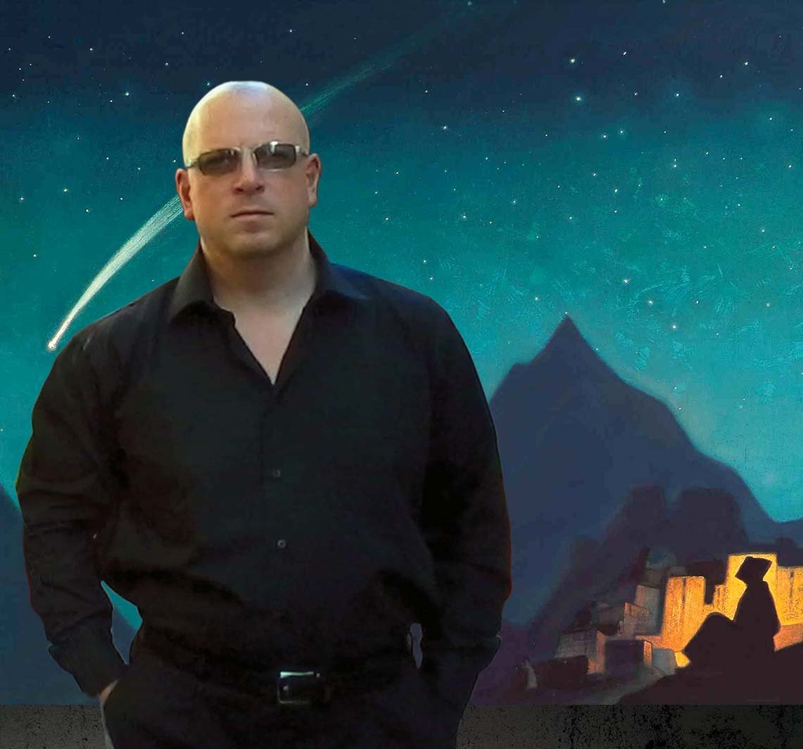
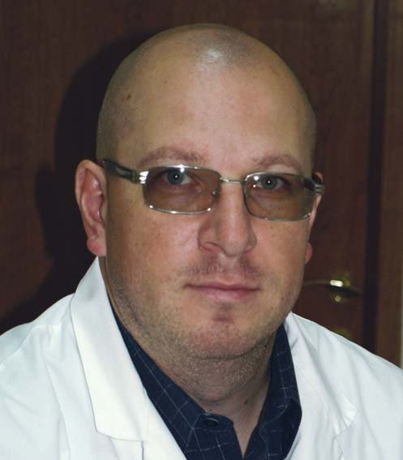
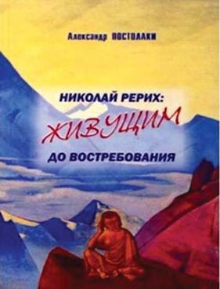
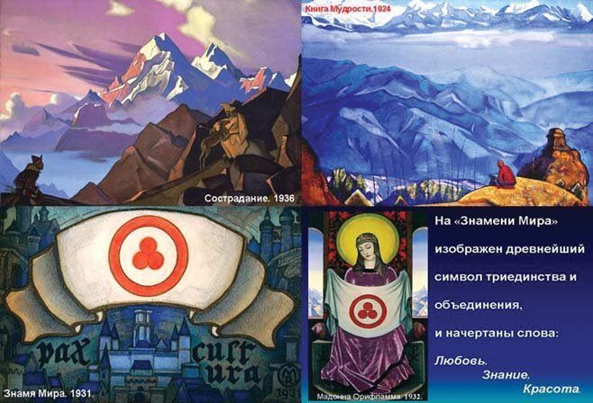
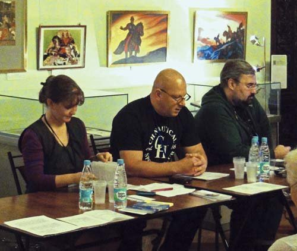
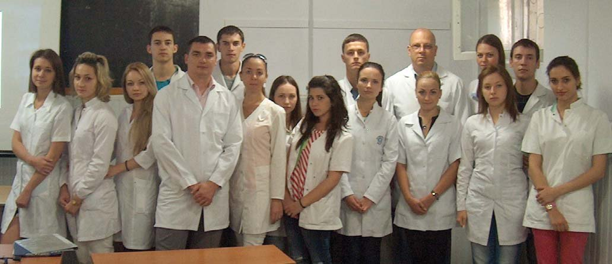
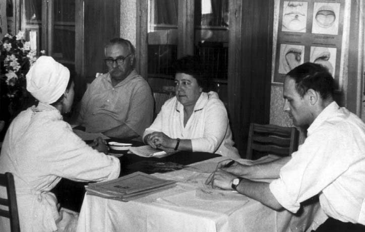
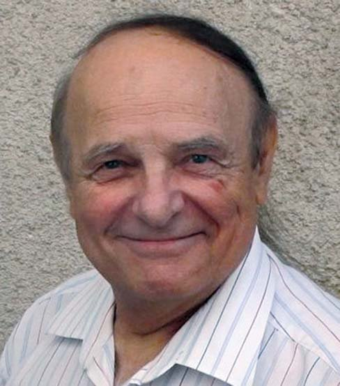
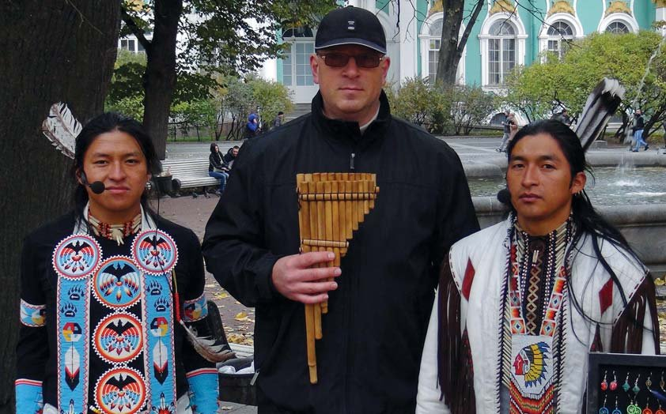

Вітальня · журнал «ДентАрт» 2015 №1 (78)
Доктор медицини Олександр Постолакі: «Настала пора повернутися до Гіппократа»
Dr. Alexandr Postolachi interview

Доктор медицини Олександр Постолакі, доцент кафедри ортопедичної стоматології ім. професора І.І. Постолакі Державного університету медицини і фармації ім. Ніколає Тестеміцану (м. Кишинеу, Республіка Молдова) — один з тих учених, чий підхід до вивчення стоматологічних проблем є міждисциплінарним не лише в загальноприйнятому розумінні співпраці лікарів різних спеціальностей, але й у контексті застосування класичних методів наукового пізнання, усвідомлення єдності макро- і мікрокосмосу та утвердження концепції лікар — пацієнт — природа.
За останні роки Олександр Постолакі опублікував понад 90 наукових робіт у різних виданнях і отримав 4 авторських свідоцтва про винаходи на науковому напрямку «оклюзійні порушення зубів, їх профілактика та лікування», відзначені на міжнародній виставці у 2007 році срібною та бронзовою медалями. За серію статей, опублікованих у журналі «ДентАрт», і навчальний посібник Європейський науково-промисловий консорціум (ESIC) 2013 року нагородив його Золотою медаллю «Європейська якість» (Gold medal «European Quality»).
Розширити Землю до меж Космосу
— Ваші статті останніх років у журналі «ДентАрт» та інших виданнях засвідчили, що у Вашій особі наука має стоматолога-філософа, чий погляд на формування всього живого на Землі заглиблюється в такі горизонти, про які багато лікарів і поняття не мають. Де витоки такого підходу-захоплення? У дитинстві? Юності? Книгах?
— Передусім дозвольте висловити подяку редакції журналу за запрошення поговорити у вашій затишній Вітальні! Для мене це висока честь! Тут завжди можна зустріти цікавих, розумних людей, професіоналів у своїй справі, і журнал дарує читачам виняткову можливість пізнати їх ближче, замислитися над перипетіями доль і життєвими колізіями і в той же час дізнатися думку про існуючі проблеми і досягнення у стоматології.
Ви знаєте, я часто чую на адресу своїх публікацій, що вони становлять собою філософський напрямок, а не науковий. Це неправильно, тому що філософія і наука мають тісний і нерозривний історичний зв'язок, і саме з філософії як способу осягнення світу виникли свого часу науки. Тому у своїх роботах я спираюся на класичні методи наукового пізнання, які були сформульовані ще кілька століть тому всесвітньо відомими, визнаними вченими, філософами, математиками і фізиками, такими як Ф. Бекон, Р. Декарт, Г. Лейбніц, і є основою сучасного природознавства, і тільки з часом для наукового пізнання стала застосовуватися сукупність інтелектуальних і матеріально-речових способів досягнення істинних знань, і не більше того.
А все почалося з книги, яку мені подарував батько. Мені було тоді близько 10 років, я дуже хворів, і в один з вечорів батько зайшов до мене в кімнату і простягнув кілька нових книг, які ще пахли свіжою друкарською фарбою. Найбільшою і найбарвистішою з них була «Слідами минулого» палеонтологів Ірини та Володимира Яковлєвих. Це був справжній шок! Я прочитав її залпом за кілька днів і був вражений розповіддю про дивовижні створіння природи, що жили мільйони років тому на Землі. Після цього я швидко пішов на поправку! Потім ще неодноразово її перечитував. На ній виросло кілька поколінь, у тому числі і мій старший син Ігор, який навчається на зубного техніка. І через стільки років я тримаю її в руках, і вона не перестає мене дивувати чудовим оформленням і стилем написання. І я давно намагаюся в книжкових магазинах знайти що-небудь подібне, таке ж захоплююче, але вже для своєї улюбленої доньки Аліни, але кращої книги, ніж ця, поки що не знайшов. Аліна велика розумниця! Ми вирішили, що коли вона підросте, напишемо самі книгу про небачених звірів і птахів. Сподіваюся, наша мрія обов'язково збудеться, і першим про це дізнається журнал «ДентАрт»!

Думками живу у майбутньому.
Звичайно, витоки мого захоплення історією нашої планети тягнуться з дитинства під впливом книг, художніх і науково-популярних фільмів, які я люблю дивитися досі. На початку 80-х на «Київнаукфільмі» було знято захоплюючий фільм «Люди і дельфіни», і на кожну серію я чекав з величезним нетерпінням. Крім того, у нашій родині передплачували журнали «Наука і життя», «Знання — сила», у друзів брав читати «Навколо світу». Разом з батьком завжди обговорювали якісь цікаві статті, популярні колись телепередачі «Клуб кіноподорожей», «У світі тварин», «Очевидне неймовірне». Не можна не згадати і серію не менш популярних і відомих у Радянському Союзі книг «На суші і на морі». Заповітною мрією батька в молодості було сконструювати телескоп і в рідкісні хвилини відпочинку вивчати нічне небо. Багато років він передплачував журнал з астрономії. Тепер над цим замислююся і я.
Другий етап захоплення почався, коли я працював над своєю дисертацією і найбільше враження з літератури на мене зробив, без перебільшення, журнал про науку і мистецтво у стоматології «ДентАрт», де публікувалися цікаві статті Е.Я. Вареса, чудові монографії Л. М. Ломіашвілі і співавт. «Художнє моделювання зубів», В.Р. Окушка «Фізіологія зубів», О.П. Стахова і співавт. «Коди да Вінчі і ряди Фібоначчі» та багато інших. Під їх безпосереднім впливом я запропонував власні практичні спостереження і техніку моделювання оклюзійної поверхні зубів. Перша стаття про це була надрукована 2007 року в журналі «ДентАрт».
До серпня 2009 року я закінчив роботу над великою статтею «Про прояви «золотого перетину», «чисел Фібоначчі» і «закону філотаксису» в природі, у будові організму і зубощелепної системи людини». Тема, яку я взявся вивчати, на той момент була ще мало зрозуміла і майже не знайома більшості стоматологів, хоча про застосування С.В. Радлінським «золотої пропорції» у прямій реставрації зубів вже було відомо з публікацій у «ДентАрті», а також з його численних лекцій у різних містах і країнах, слід сказати, неодноразово проведених з успіхом і в Кишинеу. Лекції та майстер-класи С.В. Радлінського — це взагалі окрема тема. Зізнаюся, що від них у мене було не менше потрясіння, ніж від прочитаної в дитинстві книги, про яку я розповів! І, звичайно, особливо вплинуло на мене тісне спілкування з такими вчителями у професії, як д-р медицини, проф. В.З. Бурлаку, д-р медицини, доцент В.Д. Фала. Вони підтримали мене на обраному шляху: неодноразово я з ними консультувався і роблю це й нині, за що щиро і сердечно дякую.
У подальшому, коли наприкінці 2009 року була надрукована в «ДентАрті», можна сказати, перша стаття з майбутньої серії, про спіральну симетрію в будові зубощелепної системи, саме редакція журналу «ДентАрт» запропонувала мені продовжити розвивати започатковану тему. Я дуже вдячний «ДентАртові» за цей складний, багато в чому переломний, але дуже важливий і цікавий період мого життя, який ми провели разом, і сподіваюся, наша співпраця триватиме і надалі! Хочу зазначити, що тільки за період 2010-2012 років у журналі вийшла серія з восьми моїх статей під загальною назвою «Репаративна регенерація — «Чаша Грааля» у стоматології третього тисячоліття. Форма і Еволюція». Цьогоріч планується завершити серію із 3-х частин «Філотаксис і біомеханіка зубів». Сподіваюся, читачі дізнаються багато нового, може, несподіваного, і можливо, їхні знання про людину і світорозуміння в цілому зміняться і стануть ширшими і глибшими. Людина споконвіку мріє осягнути таємниці світобудови і розширити Землю, як герой «Соляріса» С. Лема, до меж Всесвіту. А для лікаря розширення знань — це нескінченний, але необхідний для блага людей процес.
«Лікар — пацієнт — природа» — оновлена концепція загальної медицини і стоматології
— Наскільки, на Вашу думку, важлива нині філософія, історія медицини в медичних університетах? Десь ці предмети скорочують або взагалі йдеться про їх скасування, оскільки вважається, що майбутнім лікарям слід більше вивчати комп'ютерні технології…
— Якщо подібне вже відбувається у якихось вузах або очікується в найближчій перспективі, то вважаю це грубою помилкою, якої не замінити жодними сучасними технологіями, які такими є лише нині. Інша річ, філософію слід наблизити безпосередньо до медицини і педагогіки, а для цього треба більше уваги надавати у процесі навчання класикам медицини та біології. У Короткій медичній енциклопедії я знайшов таке роз'яснення, яке дозвольте процитувати: «Найважливішими філософськими питаннями біології та медицини є питання про сутність живого, про походження органічного світу і доцільність живого, про місце медицини серед наук про людину, про сутність здоров'я і хвороби, а також проблема пошуку конструктивних принципів побудови теорії медицини». Згадаймо, що з часів Піфагора, котрий уперше вжив щодо себе слово «філософ», тобто той, хто любить мудрість, перші філософи були і першими математиками, фізиками, лікарями і т. д.
Погодьтеся, що сьогодні філософію медицини та біоетики як предмет викладають фахівці, котрі безпосередньо не мають стосунку до медицини або взагалі біології. Створюється враження, що медицину і філософію навмисно віддаляють одну від одної, доводячи до негласної конфронтації, не розуміючи наслідків, які позначаться на всій медицині і призведуть до катастрофічного кризи. Перші ознаки цього процесу видно неозброєним оком уже сьогодні, потрібно лише об'єктивно оцінити реалії і знайти мужність зізнатися в цьому. Ми навіть говоримо про ці проблеми щодня, але не помічаємо і не розуміємо до кінця їх причин, не знаємо способу що-небудь змінити в ситуації, що склалася. А сама проблема лежить на поверхні і лише поглиблюється. Адже якщо ми говоримо про університет, то вже сама назва передбачає, що студент має отримувати універсальні знання, у стінах університету відбувається його формування як особистості з широким колом міждисциплінарних знань. Паралельно з навчанням студентам має прищеплюватися прагнення до самовдосконалення.
Вважаю, що сьогодні відомий гуманістичний принцип «людина — природа» гостро потребує перетворення у вигляді оновленої концепції загальної медицини і стоматології, зокрема у вигляді «лікар — пацієнт — природа». І всі наші сили повинні бути спрямовані на створення міцної фундаментальної основи, збагаченої не лише класичними положеннями та новітніми досягненнями в теорії і практиці, але й культурологічними знаннями з метою виховання студентської молоді в дусі заповітів великого Гіппократа. Ми часто згадуємо ім'я Гіппократа в різних ситуаціях і нерідко апелюємо до нього, але чи багато хто читав його праці, нехай навіть фрагментарно, замислювався над його настановами, які анітрохи не втратили свого значення за майже 2500 років? Наприклад, хоча б «Про лікаря», «Про благопристойну поведінку», «Настанови» або «Про мистецтво», «Про давню медицину». Саме тепер ми повинні звернути свій погляд до мудрості Античності, до уявлень давньогрецьких філософів про гармонію та красу, до спадщини епохи Відродження — Леонардо да Вінчі, Альбрехта Дюрера, до часу злету науково-філософської думки і неймовірних відкриттів, які змінили світогляд людини в епоху Просвітництва і Нового часу.
Але, на жаль, ми рідко звертаємося навіть до досвіду, порад і застережень видатних діячів науки, педагогіки та мистецтва вже зовсім недавнього минулого, оскільки швидше не знаємо про них нічого або майже нічого. Це В.І. Вернадський, М.К. Реріх, А. Швейцер та багато інших видатних особистостей світового значення. А тим часом М.К. Реріх говорив: «Усіляке духовне зубожіння ганебне завжди»; «Людина, що не відрізняє мале від великого, нікчемне від видатного — не може бути духовно розвиненою»; «Посмійтеся, коли назвуть ученими духовних жебраків».
«Не проґав! Не нашкодь! Живи і пам'ятай!»
— Розкажіть про етапи свого професійного становлення.
— Cвою трудову діяльність я розпочав у 15 років санітаром операційного блоку в Центральній лікарні швидкої медичної допомоги м. Кишинеу. На цю роботу мене влаштував батько в 1987 році, оскільки успіхами у навчанні я не відзначався, а для вступу в медінститут необхідно було мати трудовий стаж. Після уроків у школі чотири рази на тиждень я виконував найнепривабливішу роботу, яка запам'яталася мені на все життя. Після закінчення 10 класу я не пройшов за конкурсом на вступних іспитах і восени, наприкінці листопада 1989 року, вступив на підготовче відділення при Кишинівському державному медичному інституті. І вже влітку 1990 року, склавши успішно іспити, я став нарешті студентом, але не стоматологічного факультету. Через роки мене неодноразово запитували, чому я відразу не «пішов на стоматолога»? Тоді я не послухався поради батька, бо для мене більшою романтикою була оповита професія старшого брата Валерія, який працював лікарем швидкої допомоги. Після закінчення у 1996 році лікувального факультету ДУМФ ім. Ніколає Тестеміцану я був зарахований до інтернатури, яку успішно пройшов у Клінічній лікарні № 1 м. Кишинеу. У мене залишилися щонайтепліші спогади про моїх наставників, з якими я досі намагаюся підтримувати дружні стосунки. Після післядипломної спеціалізації із загальної терапії в 1997-2000 рр. працював лікарем-фізіотерапевтом у Центральній залізничній лікарні станції Кишинеу. Ця спеціальність мені дуже подобалася, і я багато чому навчився, а головне, зміг переконатися, наскільки ефективним буває лікування пацієнта фізичними методами, а не тільки фармакологічними засобами. До кінця 1990-х років на держпідприємстві «Залізниці Молдови» склалася непроста економічна ситуація, в результаті якої я потрапив під 50% скорочення окладу лікаря, але продовжував працювати, зводячи кінці з кінцями, бо іншого виходу не було. Час був складний, намагався заробляти гроші як мануальний масажист, щоб хоч якось прогодувати сім'ю. І в цей період батько запропонував подумати ще раз про вступ на стоматологічний факультет. І я його послухав. У період з 2000 по 2003 рік пройшов навчання в резидентурі із загальної стоматології, а потім вступив до аспірантури з цієї ж спеціальності. 2007 року захистив дисертацію на здобуття наукового ступеня доктора медицини з проблем оклюзійних порушень зубів.
Нині мої наукові дослідження присвячені вивченню питань біометричних законів розвитку і формоутворення зубощелепно-лицьової системи людини. На цю тему було опубліковано навчальний посібник «Сучасна концепція про формоутворення щелепно-лицьової системи людини» (2012), де офіційним рецензентом виступив проф. О.П. Стахов (Україна, Канада). У 2012 р. Міжнародне видавництво Lambert Academic Publishing (Німеччина) опублікувало книгу проф. О.П. Стахова «Основи математики гармонії та її застосування» у 3-х томах, в яку були включені також і наукові ідеї на тему досліджень, які провів я.

Книга «М.К. Реріх: Живим — до запитання». «Небагато людей хоча б раз на тиждень згадали, що за сім днів вони внесли у сферу краси та знання. І надаремно мистецтво стукає у ці замкнені двері. Цей стук серця турбує мозок не більше, ніж стук вітру. І ще щільніше причиняють віконниці та завішують шовковими тканинами будь-який доступ повітря». (М.К. Реріх. ШЛЯХИ БЛАГОСЛОВЕННЯ. IV, 1921).
Два роки тому вийшла моя монографія «Клінічні аспекти реставрації бічних зубів і оклюзії», присвячена світлій пам'яті мого батька — учителя в житті і професії, друга і наставника Іларіона Івановича Постолакі. Вона призначена для студентів, резидентів і лікарів-стоматологів, і основна її мета в тому, щоб показати реальну можливість виконувати різні за ступенем складності клінічні завдання, максимально зберігаючи обсяг твердих зубних тканин, мінімально піддаючи травматичному інструментальному впливу, наприклад, інтактні зуби, що обмежують малий включений дефект, з метою відновлення безперервності зубного ряду безметаловим адгезивним протезом, проводити якісну ізоляцію операційного поля спеціально розробленими інструментами, коли ситуація з якихось причин не дозволяє лікареві самостійно встановити систему рабердам або застосування анестезії небажане при підвищеному ризику розвитку побічних ефектів.
Детальніше мені хотілося б розповісти про свою книгу «Микола Реріх: Живим — до запитання», яка вийшла друком 19 жовтня 2013 року, напередодні дня народження мого батька, і була моїм пам'ятним подарунком йому. Вона складається з двох частин, і перша — це синтез висловлювань, роздумів, порад і застережень М.К. Реріха (1874-1947), котрі, на мій погляд, як і раніше, актуальні для всього суспільства і не втратили з часом своєї злободенної гостроти. Найголовніше, що в такому форматі вони можуть бути легко сприйняті непідготованим читачем, особливо молодого віку.
Друга частина книги висвітлює біографію мого батька, у стислій формі дано основні результати докторської дисертації (особливості реакції зубних тканин на глибоке препарування і репаративної регенерації дентину), а також сюди включені мої окремі статті та лекції, які так чи інакше заторкують і тему творчості М.К. Реріха.
У серпні 2014 р. було завершено роботу над створенням музичного кіноескізу, присвяченого творчості М.К. Реріха. У фільмі тривалістю 27 хвилин глядачі побачили 20 картин М.К. Реріха, таких широко відомих, як «Філософ. Тиша», «Перли шукань», «Книга мудрості», «Співчуття», «Знамено Миру» та інші, і супроводжувалося це простими, мудрими і життєво важливими в наш неспокійний час думками, порадами, застереженнями з реріхівських статей, нарисів різних років, які увійшли до книги: «Ви кажете: «Важко нам. Де ж думати про знання і красу, коли жити нічим. Далеко нам до знання і до мистецтва. Потрібно влаштувати раніше важливі справи» (ШЛЯХИ БЛАГОСЛОВЕННЯ. Адамант, 1920); «Друзі невидимі! Знаю вас. Знаю, як нелюдськи важко вам перемогти всі умовності життя і не загасити ваш світоч. Знаю, як болісно для вас іти під презирством тих, хто побудував своє життя на темних поняттях грошей» (ШЛЯХИ БЛАГОСЛОВЕННЯ. I, 1921.); «Люди занадто «зайняті» в дрібному значенні слова [...], але найголовніше значення, що вульгарність восторжествувала. Царство цієї таємничої сили вульгарності безмежне» (ШЛЯХИ БЛАГОСЛОВЕННЯ. Дія, 1922); «Краса є промінь осягнення і піднесення. [...] Без Краси, як сухе опале листя, будуть віднесені вихором життя списані аркуші паперу і крик духовного голоду, як і раніше, буде потрясати пустельні у своєму велелюдді міста» (ШЛЯХИ БЛАГОСЛОВЕННЯ. Зірка Матері Світу, 1924); «Саме тепер, звільнившись від забобону заперечення, люди знову заглянуть у стародавні записи і почерпнуть корисні міркування з досвіду століть» (БРАМА В МАЙБУТНЄ. Ягіль, 1935).

М.К. Реріх (1874-1947) про мир, мудрість, співчуття. Не проґав! Не нашкодь! Живи і пам'ятай!
Під час обговорення студенти натхненно ділилися своїми враженнями, у деяких блищали від захоплення очі, а лиця були осяяні світлом усмішок. Тематика фільму була їм майже незнайома, і повною несподіванкою виявилася для них його прем'єра у звичайний навчальний день. Було помітно, вони відкрили для себе щось надзвичайно нове, що сколихнуло їх внутрішній світ і не залишило байдужими. І я глибоко переконаний, що на навколишню дійсність, загальну ситуацію у світі і нескінченні людські страждання ці хлопці стануть дивитися зовсім іншими очима. М.К. Реріх твердо вірив, що «Лик краси і знання вилікує народ від розбещеності думки».

Доповідь на міжнародній науково-практичній конференції «Реріхівська спадщина — 2014» у Будинку-музеї родини Реріхів. Санкт-Петербург, 2014.

Разом зі студентами після прем'єри музичного кіноескізу «Естетична і духовно-моральна спадщина М.К. Реріха: «ЖИВИМ — ДО ЗАПИТАННЯ». 05.09.2014.
«Дослідження мого батька допомагають зупинити «епідемію» масового депульпування зубів»
— Ви працюєте на кафедрі імені свого батька — професора Іларіона Постолакі. Наскільки значним був його вплив на розвиток стоматології Молдови та інших країн?
— Спочатку слід сказати про те, що в основі становлення і розвитку стоматології в Молдові лежав досвід російської, української та латвійської стоматологічних шкіл. Докладну статтю про це до 50-річчя стоматологічного факультету, яке відзначалося 2011 року, написала випускниця Харківського медичного стоматологічного факультету, д-р медицини, професор Софія Василівна Сирбу. І, відповідно, формування викладацького складу кафедр проводилося на початку 1960-х з перших випускників, які повернулися на батьківщину в більшості своїй з Харкова та Одеси. На запрошення Кишинівського медичного інституту з Києва приїхали викладати професори М.В. Фетисов — зав. кафедри хірургічної стоматології 1961-1968 рр. і за сумісництвом керівник методико-дидактичного освітнього процесу на кафедрах терапевтичної та ортопедичної стоматології і С.П. Мудрий — зав. кафедри ортопедичної стоматології в 1961-1962 рр.
Мій батько Іларіон Іванович Постолакі здобув освіту в Харківському державному медичному стоматологічному інституті. У 1962-1963 рр. працював клінічним ординатором кафедри ортопедичної стоматології Київського державного медичного інституту ім. О. О. Богомольця. У 1967 р. захистив кандидатську дисертацію «Клініка і лікування глибокого прикусу у дітей. Клініко-експериментальне дослідження» (м. Кишинеу). У 1983 році захистив докторську дисертацію «Закономірності захисно-компенсаторної реакції в зубних тканинах і можливості її стимулювання при ортопедичних втручаннях. Експериментально-клінічне дослідження» (м. Київ). У 1969-2007 рр. — зав. кафедри ортопедичної стоматології ДУМФ ім. Н. Тестеміцану. У 1971-1982 і в 1993-2001 рр. — декан стоматологічного факультету цього університету. Заслужений діяч науки Республіки Молдова, доктор медичних наук, професор. У 2013 р. йому присвоєно почесне звання — Засновник молдавської наукової школи ортопедичної стоматології.

Екзамен на стоматологічному факультеті, Кишинеу, 1960-і. Другий ліворуч — проф. М.В. Фетисов, посередині — О.А. Овчарук, перший праворуч — асистент І.І. Постолакі. (Із сімейного архіву, публікується уперше).
У своїх роботах проф. І.І. Постолакі неодноразово підкреслював, що стоматологи-ортопеди, на жаль, нерідко препарують зуби, не дотримуючись необхідних заходів для активізації захисних процесів і профілактики можливих ускладнень. У своїх дослідженнях він переконливо довів, що такий підхід до процесу підготовки зубів під штучні коронки невиправданий з біологічної точки зору, оскільки препарування зуба слід розглядати як вид хірургічного втручання, що вимагає відповідних захисних заходів, спрямованих на створення оптимальних умов для прояву захисних реакцій. Питання, пов'язані із захисно-компенсаторною реакцією зубних тканин, є одними з фундаментальних для теоретичної та практичної стоматології, і у зв'язку з тим, що значного поширення набула методика глибокого препарування зубів, отримані І.І. Постолакі результати ще актуальніші, ніж раніше.
Встановлені проф. І.І. Постолакі факти, закономірності та розроблені практичні рекомендації для лікарів-стоматологів нині слід вважати особливо цінними в контексті новітніх досягнень як в ортопедичній, так і в терапевтичній стоматології. Але через низку причин ці основоположні, життєво важливі не лише для стоматологічного, але й для загальносоматичного здоров'я пацієнтів принципи профілактики та лікування мало відомі сьогодні або незаслужено забуті, а отже, мало застосовуються. Наявний тепер в арсеналі стоматологів широкий спектр анестезуючих препаратів дозволяє більш широко проводити депульпування зубів, помилково підносячи подібний план лікування пацієнта як «обов'язковий» етап передортопедичної підготовки. Наслідки такого масового депульпування зубів, особливо в молодому віці, не є ні для кого секретом, вони добре відомі і стали частиною повсякденної дійсності. І ситуація поки що мало змінюється в бік збереження вітальності зуба перед препаруванням. Часто і сам пацієнт не розуміє серйозності віддалених наслідків, які часом насправді не такі далекі, як це може здатися спочатку. Загальносоматичні захворювання, які за останні десятиліття дуже «помолодшали», а тенденція в цьому плані, як ми бачимо, лише погіршується, безсумнівно, впливають і на стоматологічне здоров'я і можуть провокувати розвиток запально-дистрофічних процесів у тканинах пародонту або викликати загострення вже наявних хронічних захворювань, що перебувають у стадії ремісії. Тому я як син, учень і послідовник свого батька і вчителя намагаюся через свої статті, лекції, книги знайомити студентів і лікарів з тими досягненнями молдавської національної стоматології, які є гордістю нашої країни і вплинули на розвиток усієї загальної стоматології.

Професор Іларіон Постолакі: «Я люблю тебе — життя!» (червень 2011). «Небо в зорях все сяє, та усмішка твоя від вогнів яскравіш, Віра нас зігріває, що живий ти, і люблю тебе тільки сильніш!» (О. Постолакі. Слово про батька. 31.08.2014).
«Ми лише підійшли до берега незвіданого субатомного океану»
— У «ДентАрті» готується до друку завершальна частина Вашого захоплюючого есе «Філотаксис і біомеханіка зубів». Чого очікувати читачам далі? Чи не втомилися «з терпінням Сфінкса міркувати над таємницями віків»?
— За роки інтенсивної роботи над циклом статей поступово захоплення переросло у спосіб життя, і я потроху навчився прислухатися до свого внутрішнього голосу і тонше сприймати світ природи і ті знаки, які даються людині згори. Це збагатило мене знаннями, а значить, багато в чому зміцнило упевненість у повсякденній професійній діяльності, у спілкуванні з пацієнтами, зі студентами, тому що інакше тепер бачиш, відчуваєш, розумієш. У подальших планах залишається вивчення механізмів еволюції і формоутворення біологічних об'єктів у природі, а також особливостей індивідуального розвитку людини і зубощелепної системи, складності існуючих загальних родинних взаємозв'язків, що називається глибокою гомологією. Також маю намір продовжити вивчення імовірнісних процесів, що відбуваються у зубних тканинах на мікрорівні. У цьому плані нам ще потрібно чимало потрудитися, оскільки подальший розвиток нанотехнологій та впровадження їх у практичну стоматологію неможливо собі уявити без створення міцної теоретичної основи. А для цього необхідно починати більш поглиблено освоювати міждисциплінарні знання, наприклад, окремі розділи з біофізики та квантової механіки, бо потрібно не лише краще собі уявляти дію фізичних законів на біологічному рівні організації речовини, а й навчитися розуміти, що зі зменшенням розмірів матеріальних об'єктів до наночастинок фізичні явища набувають зовсім інших властивостей. Я намагаюся уникати складних термінів і формулювань, не знайомих читачам, але, як і вся передова наука, ми повинні готувати себе до переходу від ньютонівської концепції світобудови до усвідомлення того, що в основі всіх природних і космічних процесів надмалих або гігантських розмірів лежить обмін енергоінформаційними потоками. Безумовно, організм людини і зубощелепна система не є винятками із правил.
Якось в одній зі своїх статей я згадав ім'я видатного американського фізика-теоретика, лауреата Нобелівської премії 1965 року Річарда Фейнмана. Він загальновизнаний родоначальник нанотехнологічної ери у світовій науці. Наприкінці 1959 року Фейнман виступив зі своєю знаменитою лекцією, назва якої відомо всім, хто цікавиться цією темою. У приблизному перекладі вона звучить так: «Усередині простору багато місця». І навіть сьогодні ця лекція дивує далекоглядністю автора. Те, що колись здавалося нездійсненною фантастикою, пророчо виповнилося через якихось 40-50 років завдяки розробленим високим технологіям. І звичайно, це далеко не межа. Учені всього-навсього лише підійшли до берега незвіданого людиною субатомного океану, масштаб простору якого ще належить з'ясувати, в тому числі і приховані в ньому небезпеки і наслідки необдуманих дій і помилок. Але будь-яка технологія не з'являється на порожньому місці. Її ядром є гіпотези, за висловом великого Йоганна Гете, — «це риштовання, які зводять перед будівлею і зносять, коли будівля готова», що й продемонстрував Р. Фейнман на найвищому рівні. Мені здається, цей приклад досить показовий. Для мене ця унікальна особистість також є авторитетом у підході до побудови гіпотез і вирішення наукових проблем.
— Ваше побажання колегам з 13 країн, де читають «ДентАрт».
— Я хочу побажати всім шановним і дорогим моїм колегам та їхнім сім'ям міцного здоров'я, мирного неба над головою, радісних сонячних днів у житті, доброжитку та успіхів у роботі! У цей складний і неспокійний час нас мають особливо зблизити загальна улюблена справа, взаєморозуміння і взаємодопомога.
А тим молодим людям, які тільки переступили поріг стоматологічних вузів і факультетів, побажаю не розтрачувати себе на дрібниці, а сконцентруватися на обраній меті. Не втрачати дорогоцінний час і докласти максимум зусиль, щоб не лише оволодіти мистецтвом медицини, але й знайти за роки навчання і спілкування з учителями в Alma Mater ту внутрішню духовно-моральну опору, той незгасний у серці Маяк Добра і Совісті, який допоможе правильно визначати напрямок руху в бурхливому океані життя, не збитися зі шляху і завжди прийти людям на допомогу, навіть СЛОВОМ, а це вже немало. Які слова потрібно знайти і в якій формі їх піднести пацієнтові, залежить від клінічної ситуації. І про це дає ясні настанови «батько медицини» великий Гіппократ. «Чисто і непорочно провадити своє життя і мистецтво» заповідано всім лікарям у Клятві Гіппократа. Звичайно, все це здасться спочатку важким при існуючих спокусах. Але іншого шляху у лікаря немає. Настала пора повернутися до Гіппократа.
Якщо зробив перший крок до своєї майбутньої професії, це значить, ти вже в дорозі. Наберися терпіння — і подолаєш непевність і страх перед невідомістю в житті. Твої вчителі тебе навчать, допоможуть, підкажуть — вони найкращі друзі. У тебе благородна мета, іди вперед сміливіше — нічого не бійся!

З музикантами із Еквадору. Санкт-Петербург, 2014. «Мистецтво об'єднає людство. Мистецтво єдине і неподільне. Мистецтво має багато гілок, але корінь спільний. Мистецтво — знамено майбутнього синтезу». М.К. Реріх. (З кн. О. І. Постолакі «М. Реріх: ЖИВИМ — ДО ЗАПИТАННЯ»).
Серію «Філотаксис і біомеханіка зубів», про яку йдеться в інтерв'ю, читайте у «ДентАрті»: частина I — №2/2013, частина II — №4/2013, частина III — №2/2015, частина IV — №3/2015.